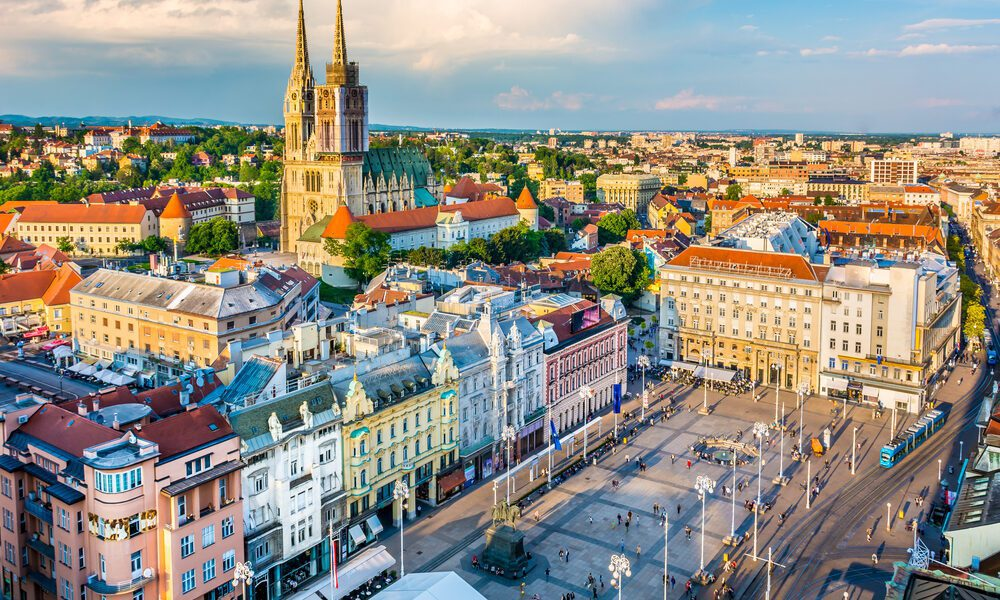

Zagreb je glavni grad i najveći grad Hrvatske. Nalazi se na rijeci Save i u centru zemlje. Također je i političko, gospodarsko i kulturno središte Hrvatske. Grad ima bogatu povijest i brojne znamenitosti, uključujući katedralu, Gornji grad, Trg bana Jelačića i mnoge muzeje i galerije.
Stranica grada